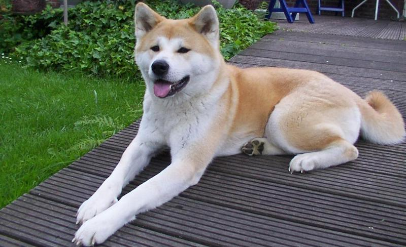

Inu ou ken ?

Au japon, les chiens ont pour appellation ken. On dit ainsi Akita ken, Shiba ken, … Dans les autres pays, le terme chien est utilisé par inu. On dit donc Akita Inu, Shiba Inu, …
Pourquoi cette différence? Au Japon, le terme chien a un kanji qui peut se prononcer de différentes manières, soit inu, soit ken.
Introduction
En examinant les chiens japonais, nous pouvons constater que dans l’ensemble des îles japonaises, nous retrouvons un ensemble de races qui correspondait autrefois aux exigences humaines primaires:
- la protection,
- la garde.
- la chasse.
- le plaisir et la compagnie.
La société japonaise ancienne est surtout composée de chasseurs, de pêcheurs et de quelques cultivateurs. Ainsi, les chiens se sont développés en caractère et en morphologie, en fonction de l’utilité et de l’environnement dans lesquels ils ont évolués offrant 12 races japonaises que l’on connaît aujourd’hui:
- Chasse, garde et compagnie: Akita, Shiba, Hokkaïdo, Kishu, Shikkoku, Kaï et Sanshu.
- Chasse et compagnie: Nihon Supittsu (petit Spitz), Chin (épagneul) et Nihon Terria (Terrier).
- Chien de traîneau: Karafuto.
- Garde et combat: Tosa.
L’Akita
ans le passé, c’était un chien de chasse et de combat. De nos jours, c’est un bon gardien et un attachant compagnon.
- Look: Grand gabarit. En moyenne, 67 cm au garrot pour les mâles et 61 cm pour les femelles. 4 couleurs existent dans cette race : le blanc, le sésame, le bringé et le roux.
- Caractère: Plutôt discipliné, c’est un chien raisonneur et réfléchi. Distant et réservé avec les étrangers, il n’aboie que pour prévenir. Facile et agréable à vivre, très calme, il est même un peu paresseux. Le défaut de ce chien est qu’il ne s’entend pas avec les autres chiens du même sexe que lui. D’où une éducation ferme et patiente dès son plus jeune âge.
Le Shiba
Il fut utilisé comme chasseur, seul pour le gibier à plume, en meute pour la chasse à l’ours. Aujourd’hui, chien de compagnie, il est encore utilisé pour la chasse. C’est le chien d’appartement des japonais, l’Akita ayant une taille trop grande.
- Look: Petite taille: 40 cm (mâles) et 37 cm (femelles). Vif dans ses allures dégagés.
- Caractère: Vif, attentif et plein d’entrain, il est capable, dans la maison, de garder son calme. Peu aboyeur, il peut se montrer têtu lorsqu’il n’est pas d’accord avec nous. Dominant, mais sociable avec les autres chiens. S’adapte à de nombreuses situations.
L’Hokkaïdo
Il s’agit du chien des Aïnous, la plus ancienne race nippone. Avant tout, chien de chasse à l’ours, qu’il piste et auquel il tient tête. Aujourd’hui, c’est un excellent compagnon.
- Look: Chien robuste, muscles toniques et lignes pures. Allures élastiques, actives et légères.
- Caractère: Calme, il est capable d’une grande activité. Tempérament digne et fier. Dominant, il partage avec les autres chiens japonais la particularité d’attaquer sans prévenir. Bon gardien, peu aboyeur, on lui prête un sens de l’orientation exceptionnel. Amical avec la famille et distant avec les étrangers, il est digne et naturel.
Le Kishu
Autrefois, chien de chasse, surtout pour le gibier et le sanglier.
- Look: 52 cm (mâles) et 46 cm (femelles). Allures légères et élastiques, fourrure de nordique.
- Caractère: C’est un chien très alerte et d’une endurance remarquable. Tempérament loyal et docile. Bon gardien, il est très sensible.
Le Chin (ou épagneul japonais)
Il est utilisé comme chien d’agrément et de compagnie. De la même famille que le pékinois, le Shi-tzu et d’autres races tibétaines, il est apprécié et réservé à l’élite japonaise, l’empereur et les dames de la cour. Même le Shogun TSUNAYOSHI s’y intéressera et prit des mesures à fin de protéger la race.
- Look: Petite taille: 25 cm (mâles). Il a une face large, un museau très court et de grands yeux.
- Caractère: Très éveillé, regard espiègle qui dénote un caractère joyeux, plein de vie. Joueur, il sait se faire oublier dans la maison. C’est un chien qui a besoin du contact humain. Familier et affectueux, il s’éduque facilement et s’adapte à tout style de vie, ville ou campagne. Dynamique et doux, élégant et charmant, c’est un ami pour tous.
Le Nihon Teria (ou Terrier japonais)
- Look: Petit chien (30 à 33cm). Tête fine avec des oreilles repliées en triangle.
- Caractère: Vif, intelligent et agile, il est d’un entretien très facile. Il est robuste et aime se défouler, chasser et jouer. Calme et amical, il est peu aboyeur. Les japonais le comparent à une porcelaine d’Imari ou à un poème de Meiji.
Le Karafuto
C’est le seul chien de traîneau japonais. Appelé aussi chien de Sakhaline, car élevé principalement dans les îles du même nom.
- Look: Grande taille (entre 56 et 66 cm). Fourrure abondante, longue ou mi-longue, de toute couleur.
- Caractère: Le Karafuto apprécie les contacts et lie rapidement connaissance avec les étrangers. Aimable et sociable, il aime la vie en meute. C’est un chien proche de l’état sauvage. C’est un des chiens les plus endurent du monde.
Nous avons la chance de pouvoir admirer des Karafuto dans le film Antartica de Koreyoshi KURAHARA où tous les chiens sont des Karafuto (et non pas des Husky ou des chiens esquimaux).
Le Tosa
Autrefois, chien de combat, aujourd’hui chien de garde. Issu de croisement avec diverses races telles que les Bulldogs, Mastiffs, Braques, Dogues Allemands, Akita, … Aujourd’hui encore, les “combats” continuent au Japon. Mais ces “combats” sont assimilés aux luttes sumotories, il n’y a pas de goutte de sang.
- Look: Taille: 60 cm (mâles) et 55 cm (femelles). Molosse aux oreilles tombantes, au poil court et au museau écrasé.
- Caractère: Patient, calme, courageux et hardi, c’est avant tout un lutteur. Silencieux et aimable, c’est un gardien impressionnant. Le Tosa a besoin de contact humain et d’un environnement familial. Calme et sûr de lui, il est agréable à vivre.
Conclusion
De nos jours, le chien est devenu un compagnon peu courant dans les familles japonaises. Mais, de nombreux facteurs économiques et sociaux se liguent contre la présence des animaux dans les villes nippones: une densité de population très importante entraînant une concentration des habitations, un rythme de vie très intensif…
Heureusement, de nombreux efforts sont faits pour réhabiliter le chien japonais: manifestations canines, expositions, conférences sur l’étude des races…
Les chiens japonais ont chacun leur mimétisme et ils trouveront toujours une place de choix dans le souvenir et le cœur d’un maître comblé par une si attachante présence nippone.